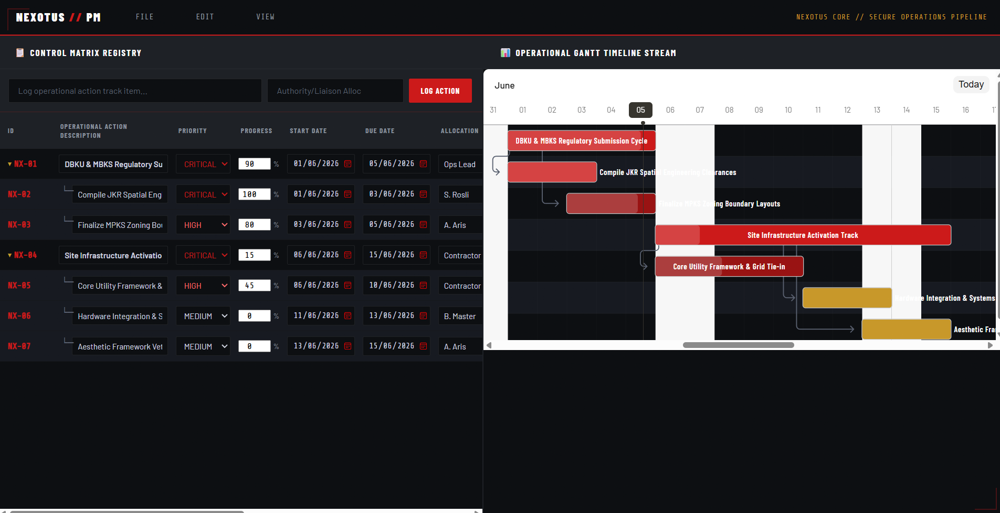

Obxiplan · Project Controls
Simple scheduling, cost tracking, and CPM basics — offline-first, no subscriptions, your data stays local.
// capabilities

[ CORE FEATURES ]
Built for real project workflows — not generic task managers.
See which tasks drive your finish date. Obxiplan calculates early/late dates and flags critical tasks automatically as you update.
| What you already use | What Obxiplan adds |
|---|---|
| 📊 Project schedules (XML files) | Open exported files on-site, review offline, send updates back |
| 📝 Spreadsheets | Import task lists, visualize as Gantt, track costs visually |
| ☁️ Cloud task tools | Local backup + offline access when internet is spotty |
| 🆕 Nothing yet — starting fresh | Simple scheduling without setup fees or steep learning curve |
Be among the first to try Obxiplan. Expect regular updates and a dev team that listens.
Request Early Access